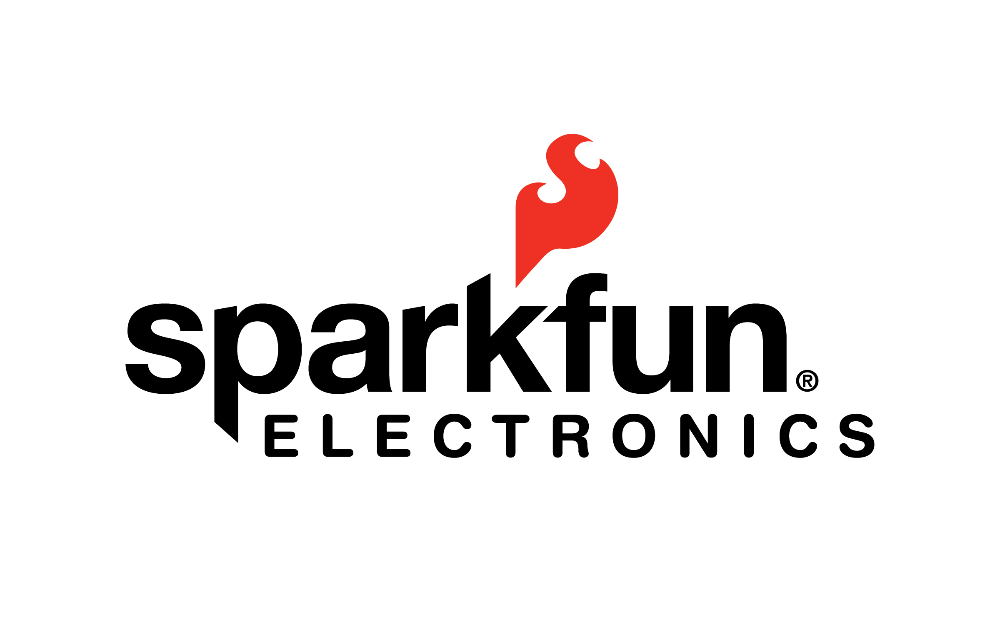

Marcas
Arduino cuenta con multitud de ediciones, cada una pensada para un público concreto o para una serie de tareas específicas. Existen tal variedad de modelos oficiales, no oficiales y compatibles que cuesta diferenciar con exactitud las características de cada una de estas placas.
Oficiales: son aquellas placas oficiales manufacturadas por la compañía italiana Smart Projects y algunas han sido diseñadas por la empresa estadounidense SparkFun Electronics (SFE) o por la también estadounidense Gravitech. Arduino Pro, Pro Mini y LilyPad son las manufacturadas por SFE y Arduino Nano por Gravitech, el resto se crean en Italia. Estas placas son las reconocidas oficialmente, incluyen el logo y son las únicas que pueden llevar la marca registrada de Arduino.
No oficiales o compatibles: son placas compatibles con Arduino pero no pueden estar registradas bajo el nombre de Arduino. Por supuesto son diseñadas y fabricadas por otras compañías ajenas. Estos desarrollos no aportan nada al desarrollo propio de Arduino, sino que son derivados que han salido para cubrir otras necesidades. Estas frecuentemente utilizan un nombre que integra el sufijo “duino” para identificarlas, como por ejemplo Freeduino del que ya hablaremos.
